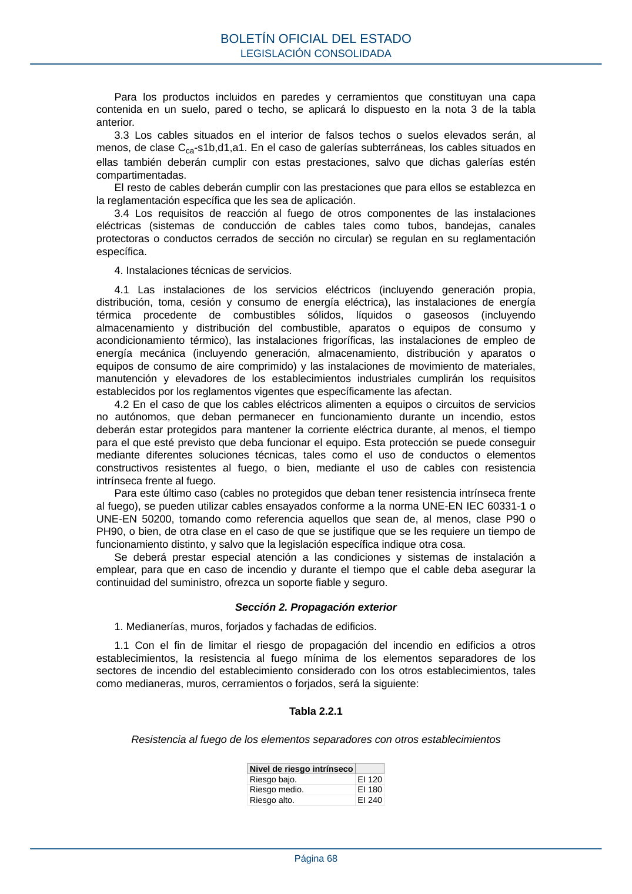

RSCIEI · edición 2025-04-10 · capa asociada
Documento RSCIEI-asociada · SHA-256 del PDF 85aa0af25d51e5b58d8975a4eefbf76d3f57a8933445cfe814ae9c4818a2e3e7
Página física 68 de 108.
Copia fiel del PDF fuente · Fuente oficial
Ficha de la disposición en la fuente oficial
Texto extraído y reorganizado: Basado en datos de la Agencia Estatal Boletín Oficial del Estado. PDF reproducido: Fuente de los datos: Agencia Estatal Boletín Oficial del Estado.
Formato: Texto de la página (Markdown)
Para los productos incluidos en paredes y cerramientos que constituyan una capa contenida en un suelo, pared o techo, se aplicará lo dispuesto en la nota 3 de la tabla anterior. 3.3 Los cables situados en el interior de falsos techos o suelos elevados serán, al menos, de clase Cca-s1b,d1,a1. En el caso de galerías subterráneas, los cables situados en ellas también deberán cumplir con estas prestaciones, salvo que dichas galerías estén compartimentadas. El resto de cables deberán cumplir con las prestaciones que para ellos se establezca en la reglamentación específica que les sea de aplicación. 3.4 Los requisitos de reacción al fuego de otros componentes de las instalaciones eléctricas (sistemas de conducción de cables tales como tubos, bandejas, canales protectoras o conductos cerrados de sección no circular) se regulan en su reglamentación específica. 4. Instalaciones técnicas de servicios. 4.1 Las instalaciones de los servicios eléctricos (incluyendo generación propia, distribución, toma, cesión y consumo de energía eléctrica), las instalaciones de energía térmica procedente de combustibles sólidos, líquidos o gaseosos (incluyendo almacenamiento y distribución del combustible, aparatos o equipos de consumo y acondicionamiento térmico), las instalaciones frigoríficas, las instalaciones de empleo de energía mecánica (incluyendo generación, almacenamiento, distribución y aparatos o equipos de consumo de aire comprimido) y las instalaciones de movimiento de materiales, manutención y elevadores de los establecimientos industriales cumplirán los requisitos establecidos por los reglamentos vigentes que específicamente las afectan. 4.2 En el caso de que los cables eléctricos alimenten a equipos o circuitos de servicios no autónomos, que deban permanecer en funcionamiento durante un incendio, estos deberán estar protegidos para mantener la corriente eléctrica durante, al menos, el tiempo para el que esté previsto que deba funcionar el equipo. Esta protección se puede conseguir mediante diferentes soluciones técnicas, tales como el uso de conductos o elementos constructivos resistentes al fuego, o bien, mediante el uso de cables con resistencia intrínseca frente al fuego. Para este último caso (cables no protegidos que deban tener resistencia intrínseca frente al fuego), se pueden utilizar cables ensayados conforme a la norma UNE-EN IEC 60331-1 o UNE-EN 50200, tomando como referencia aquellos que sean de, al menos, clase P90 o PH90, o bien, de otra clase en el caso de que se justifique que se les requiere un tiempo de funcionamiento distinto, y salvo que la legislación específica indique otra cosa. Se deberá prestar especial atención a las condiciones y sistemas de instalación a emplear, para que en caso de incendio y durante el tiempo que el cable deba asegurar la continuidad del suministro, ofrezca un soporte fiable y seguro. Sección 2. Propagación exterior 1. Medianerías, muros, forjados y fachadas de edificios. 1.1 Con el fin de limitar el riesgo de propagación del incendio en edificios a otros establecimientos, la resistencia al fuego mínima de los elementos separadores de los sectores de incendio del establecimiento considerado con los otros establecimientos, tales como medianeras, muros, cerramientos o forjados, será la siguiente: Tabla 2.2.1 Resistencia al fuego de los elementos separadores con otros establecimientos Nivel de riesgo intrínseco Riesgo bajo. EI 120 Riesgo medio. EI 180 Riesgo alto. EI 240 BOLETÍN OFICIAL DEL ESTADO LEGISLACIÓN CONSOLIDADA Página 68

Datos candidatos: compruebe celdas y notas en el PDF.